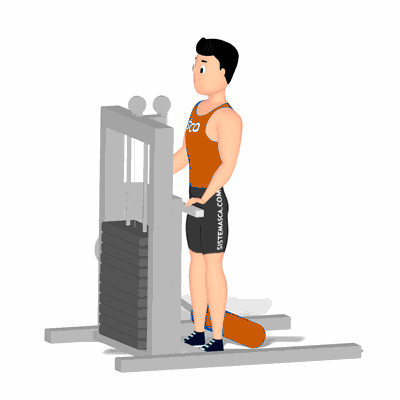

Flexão de Joelhos em Pé no Aparelho

Exercício para fortalecimento e hipertrofia dos músculos da coxa, com enfoque aos bíceps femorais. Indicado a praticante de musculação nível iniciante e intermediário. Fácil execução.
Ficha Técnica
Tipo: Musculação
Grupo Muscular: Perna
Aparelho: Nenhum
Músculos: Nenhum
Como realizar
- 1 Na posição em pé de frente para o aparelho;
- Manter a cabeça e coluna alinhadas;
- Posicione o rolo na parte posterior da perna em altura próxima a dos tornozelos;
- Com uma das pernas, manter o joelho estável na posição realizando a flexão;
- Eleve o pé, o mais alto que conseguir, realizando a contração dos músculos posteriores de coxa;
- Manter a contração por um instante, retorne à posição inicial de forma controlada;
- Repita os movimentos, conforme o número de repetições orientado pelo professor.
 RC STORE
RC STORE